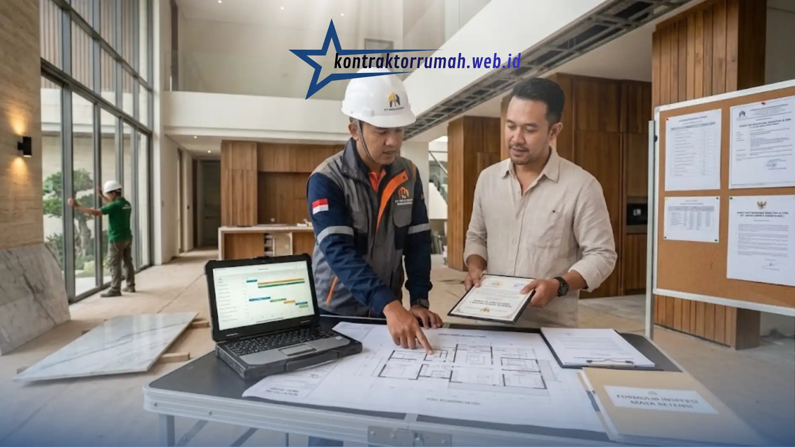

Mewujudkan hunian impian dengan desain eksklusif dan material premium bukanlah proyek sembarangan. Proses ini membutuhkan lebih dari sekadar tukang bangunan biasa; Anda membutuhkan mitra yang mampu menerjemahkan visi kemewahan Anda dengan presisi. Memilih kontraktor rumah mewah yang berbadan usaha resmi (PT atau CV) dan memberikan garansi adalah langkah krusial untuk melindungi investasi besar Anda.
Berikut faktor-faktor yang membuat legalitas dan garansi menjadi hal yang tidak bisa ditawar dalam membangun rumah mewah.
Poin Penting
- Kontraktor berbentuk PT atau CV memberi keamanan hukum: izin usaha, struktur organisasi profesional, dan kontrak kerja berkekuatan hukum.
- Jika terjadi wanprestasi atau proyek terhenti, Anda punya dasar kuat untuk menuntut pertanggungjawaban, hal yang sulit didapat dari pemborong perorangan.
- Manajemen proyek transparan (RAB dan timeline) plus laporan progres berkala meminimalkan risiko over-budget.
- Garansi masa retensi umumnya 3 hingga 6 bulan setelah serah terima kunci, dengan perbaikan tanpa tambahan biaya.
- Periksa reputasi, legalitas PT/CV, dan klausul garansi retensi secara tertulis sebelum menandatangani kontrak.
Keamanan Berkat Legalitas Resmi (PT/CV)
Menyerahkan proyek bernilai ratusan juta hingga miliaran rupiah kepada pihak tanpa legalitas berisiko tinggi. Kontraktor berbentuk badan usaha PT atau CV menawarkan tingkat keamanan hukum yang jelas: mereka memiliki izin usaha, struktur organisasi yang profesional, dan terikat pada kontrak kerja yang memiliki kekuatan hukum.
Jika terjadi wanprestasi atau proyek terhenti di tengah jalan, Anda memiliki dasar yang kuat untuk menuntut pertanggungjawaban—perlindungan yang jauh lebih sulit didapat dari pemborong perorangan.

Kelengkapan legalitas dan administrasi proyek yang jelas menjadi dasar keamanan investasi rumah Anda.
Standar Kerja Profesional & Manajemen Proyek
Hunian mewah identik dengan detail yang rumit, mulai dari instalasi smart home, struktur kolam renang, hingga penggunaan marmer impor. Kontraktor rumah mewah yang kredibel memiliki manajemen proyek (RAB dan timeline) yang transparan.
Anda akan menerima laporan progres secara berkala, sehingga risiko pembengkakan biaya (over-budget) yang tidak terpantau bisa diminimalkan dan proyek berpeluang lebih besar selesai tepat waktu.
Pentingnya Garansi Masa Retensi
Ciri utama kontraktor profesional adalah keberanian memberikan garansi masa retensi, biasanya 3 hingga 6 bulan setelah serah terima kunci. Masa retensi ini penting: jika setelah rumah dihuni ditemukan atap bocor, cat mengelupas atau instalasi listrik bermasalah, pihak kontraktor wajib memperbaikinya tanpa tambahan biaya. Ini menjadi salah satu indikator komitmen kontraktor terhadap kualitas jangka panjang.
Membangun rumah mewah adalah perjalanan mewujudkan mahakarya pribadi Anda. Agar kenyamanan dan dana Anda tidak dipertaruhkan, pastikan Anda memeriksa reputasi, legalitas resmi (PT/CV), serta klausul garansi retensi secara tertulis sebelum menandatangani kontrak kerja dengan kontraktor mana pun.
FAQ Seputar Kontraktor Rumah Mewah
Dengan memahami pentingnya legalitas PT/CV, manajemen proyek yang transparan, dan garansi masa retensi, Anda bisa memilih mitra pembangunan dengan lebih tenang. Tim jasa kontraktor rumah kami siap mendampingi mulai dari perencanaan hingga serah terima.